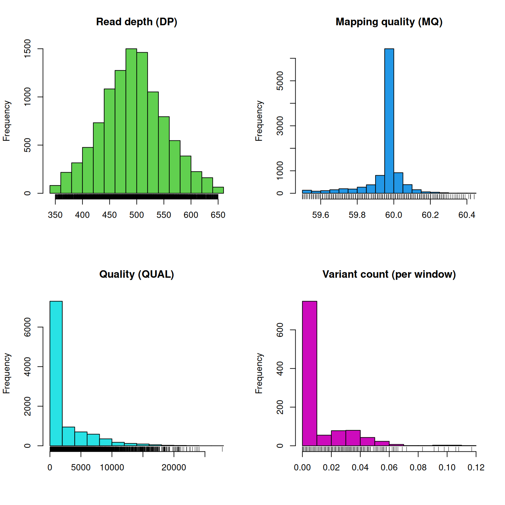
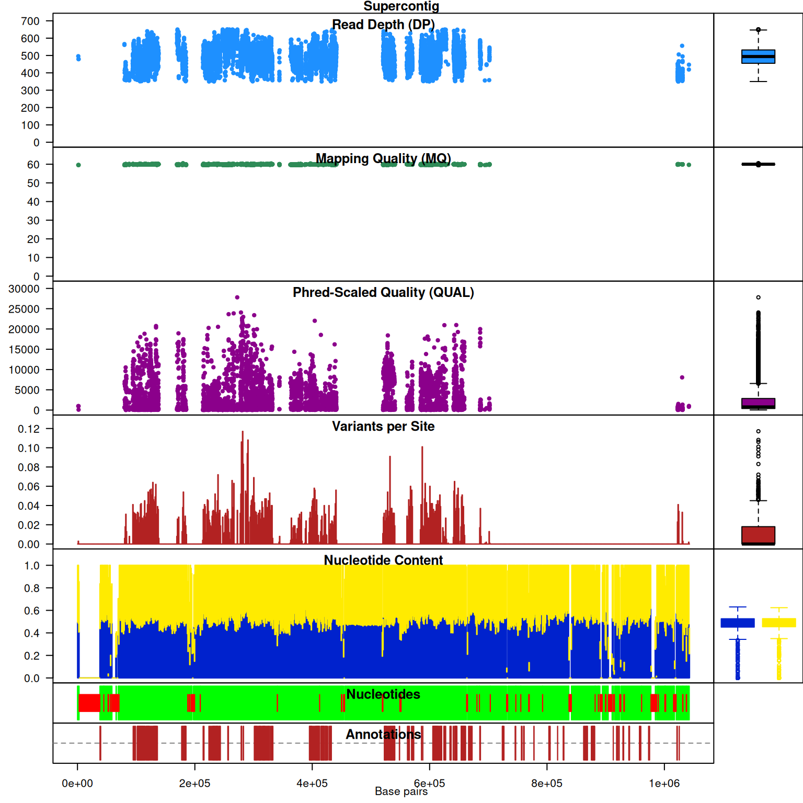

The chromR object was created to integrate variant (VCF), sequence (FASTA) and annotation data. By providing a perspective that integrates these data types it is hoped that the investigator may see new insights into their data. For example, references frequently contain regions where ‘N’ is called (an ambiguous nucleotide) and these regions may be large. Because current sequencing technologies typically call nucleotides (A, C, G or T) mapping to regions containing Ns may be poor. Consequently, no variants may be observed in these regions. If only the variant information is scrutinized than large stretches of chromosomes that contain no variants may be mysterious. Integration of the reference sequence may provide a simple explanation. Here we demonstrate how to construct and use a chromR object.
In this example we will begin by locating the example data from the
pinfsc50 package. This is a seperate package from vcfR that you will
need to install. If you haven’t installed it already, you can install it
with install.packages('pinfsc50'). For your the data from
your own reasearch activities you may wany to omit the
system.file() steps and directly use your filenames in the
input steps.
library(vcfR)
# Find the files.
vcf_file <- system.file("extdata", "pinf_sc50.vcf.gz", package = "pinfsc50")
dna_file <- system.file("extdata", "pinf_sc50.fasta", package = "pinfsc50")
gff_file <- system.file("extdata", "pinf_sc50.gff", package = "pinfsc50")
# Input the files.
vcf <- read.vcfR(vcf_file, verbose = FALSE)
dna <- ape::read.dna(dna_file, format = "fasta")
gff <- read.table(gff_file, sep="\t", quote="")
# Create a chromR object.
chrom <- create.chromR(name="Supercontig", vcf=vcf, seq=dna, ann=gff, verbose=TRUE)## Names in vcf:## Supercontig_1.50## Names of sequences:## Supercontig_1.50 of Phytophthora infestans T30-4## Warning in create.chromR(name = "Supercontig", vcf = vcf, seq = dna, ann = gff, :
## Names in variant data and sequence data do not match perfectly.
## If you choose to proceed, we'll do our best to match the data.
## But prepare yourself for unexpected results.## Names in annotation:## Supercontig_1.50## Initializing var.info slot.## var.info slot initialized.Note that a warning message indicates that the names in all of the data sources do not match pefectly. It has been my experience that this is a frequent occurrence in genome projects. Instead of asking the user to create duplicate files that have the same data but standardized names I have allowed the user to exercise some judgement. If you see this message and feel the names are correct you can ignore this and proceed.
Once we have created our chromR object we can verify that its contents are what we expect. By executing the object’s name at the console, with no other arguments, we invoke the object’s ‘show’ method. The show method for chromR objects presents counts for the data types used to create the chromR object and which are not a part of that object.
chrom## ***** Class chromR, method Show *****
## Name: Supercontig
## Chromosome length: 1,042,442 bp
## Chromosome labels: Supercontig_1.50 of Phytophthora infestans T30-4
## Annotation (@ann) count: 223
## Annotation chromosome names: Supercontig_1.50
## Variant (@vcf) count: 22,031
## Variant (@vcf) chromosome names: Supercontig_1.50
## Object size: 24.1 Mb
## Use head(object) for more details.
## ***** End Show (chromR) *****There at least two ways to graphically view the chromR object. This
first is plot() which plots histograms of some of the data
summaries.
plot(chrom)The read depth here is a sum over all samples. We see a peak that represents the depth where most of our genomes were sequenced at. Low regions of sequence depth may indicatte variants where we may be concerned that there may not be enough information to call a genotype. Variants of high coverage may represent repetetive regions of genomes where the reference may not contain all the copies so the reads pile up on the fraction of repeates that were successfully assembled. These regions may violate the ploidy assumptions made by variant callers and therefore may be considered a target for quality filtering. Mapping quality is very peaked at 60 but also contains variants that deviate from this common value. Quality (QUAL) is less easily interpreted. It appears that most of our variants are of a low quality with very few of them being of high quality. It is important to remember that while everyone would like high quality, quality is frequently difficult to measure. The simplest interpretation here is that QUAL may not be a good parameter to use to judge your variants. The last panel for SNP densities is empty becuase this data is created during the processing of chromR objects, which we will discuss below.
chromoqc(chrom)Our second plot, I call it a chromo plot, displays the same information as the plot method only it distributes the data along its chomosomal coordinates. It also includes a representation of the annotation data. The contents of this plot are somewhat flexible in that it depends on what data is present in the chromR object.
Creation and processing of a chromR object has been divided into seperate tasks. Creation loads the data into the chromR object and should typically only be required once. Processing the chromR object generates summaries of the data. Some of these summaries will need to be updated as the chromR object is updated. For example, if the size of the sliding window used to summarize variant density and GC content is changed the chromR object will need to be processed to update this information.
chrom <- proc.chromR(chrom, verbose = TRUE)## Nucleotide regions complete.## elapsed time: 0.318## N regions complete.## elapsed time: 0.303## Population summary complete.## elapsed time: 0.259## window_init complete.## elapsed time: 0## windowize_fasta complete.## elapsed time: 0.124## windowize_annotations complete.## elapsed time: 0.017## windowize_variants complete.## elapsed time: 0.001plot(chrom)Subsequent to processing our plot function is identical to its previous presentation except that we now have variant densities. When we observe the chromoqc plot we see that we now have variant densities, nucleotide content as well as a representation of where in our reference we have nucleotides (A, C, G or T) or where we have ambiguous nucleotides.
chromoqc(chrom)Now that we have gained some perspective on our data we’re ready to
make some decisions. We can use the masker() function to
mask out variants we deem to be undesireable. By masking the variants we
retain the geometry of the data matrices. This may help facilitate
subsequent actions that may depend on the position of variants in the
data matrices. Because this affects which variants we want to use in our
analyses we’ll need to process tha chromR object subsequent to
masking.
chrom <- masker(chrom, min_QUAL=0, min_DP=350, max_DP=650, min_MQ=59.5, max_MQ=60.5)
chrom <- proc.chromR(chrom, verbose = TRUE)## Nucleotide regions complete.## elapsed time: 0.303## N regions complete.## elapsed time: 0.308## Population summary complete.## elapsed time: 0.222## window_init complete.## elapsed time: 0## windowize_fasta complete.## elapsed time: 0.112## windowize_annotations complete.## elapsed time: 0.014## windowize_variants complete.## elapsed time: 0plot(chrom)
chromoqc(chrom)
These actions have allowed us to focus on variants of relatively uniform depth and mapping quality. We can see this in the chromoqc plot to validate how our actions have affected the retained data. In practice this may require several choices of parameterizations and visualization before a desireable result is obtained. Through visualization of these changes it is hoped to help the researcher make informaed decisions on how these changes affect the data.
Copyright © 2017, 2018 Brian J. Knaus. All rights reserved.
USDA Agricultural Research Service, Horticultural Crops Research Lab.